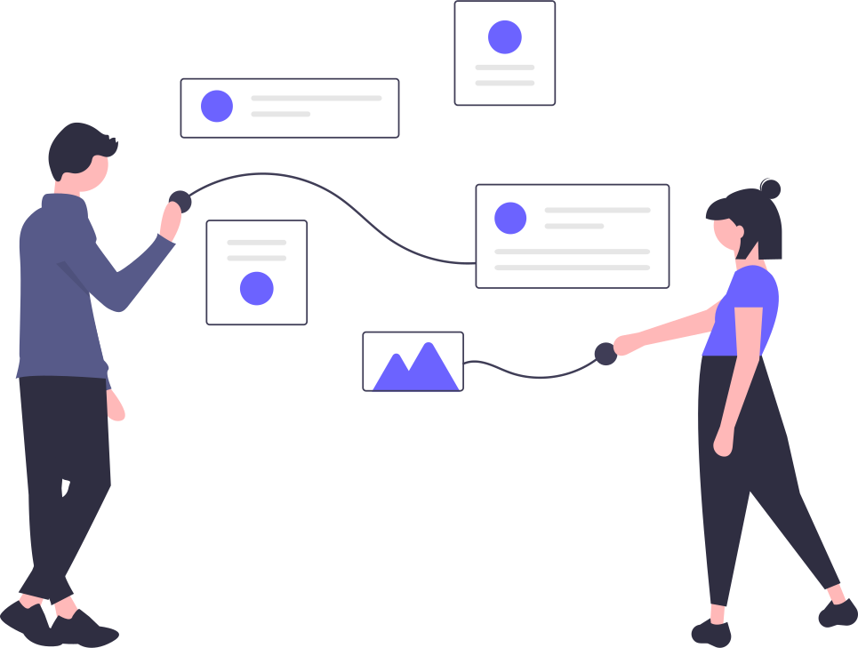

ESG and Sustainability Research: Revolutionizing University Practices through Product Innovation.
Introduction:
I'm currently immersed in a dynamic project that marries my enthusiasm for sustainability with tech innovation and teamwork.
This ongoing effort focuses on the vital world of ESG (Environmental, Social, and Governance) reporting within academic institutions.
Collaborating with UTD's Sustainability Director and innovative startup CopperWire, I'm leading a drive to refine ESG reporting methods and bolster sustainability outcomes. Through research, strategic partnerships, and tech integration,
I'm bridging the gap between university sustainability initiatives and modern digital solutions.
In this ongoing venture, my collaboration with UTD's Sustainability Director and CopperWire forms the core.
Our mission is to revolutionize how universities handle ESG reporting by tapping into technology and teamwork.

Analyzing Gaps and Mapping Processes:
My role involves pinpointing gaps and inefficiencies in the current ESG reporting setup.
I'm delving into process mapping to understand university practices in depth.
Innovating Together:
With UTD's Sustainability Director and a range of experts, we're working together closely.
This collective effort sets the stage for the changes we aim to bring.
Tech-Driven Transformation:
Through AI and blockchain, we're building an ESG reporting tool.
This digital solution automates tasks, improving accuracy and efficiency.
The integration of blockchain enhances data credibility.
Precision and Progress:
The ongoing implementation of the AI tool streamlines reporting, reducing errors and enhancing data precision.
This directly contributes to measurable advancements in sustainability.
Driving Sustainability Impact:
Ultimately, our project is about making university ESG reporting more impactful.
By boosting transparency, efficiency, and accuracy, we're enabling better sustainability decisions.
As the project progresses, I remain dedicated to my belief that teamwork, research, and technology can foster real change, creating a brighter future for sustainability.